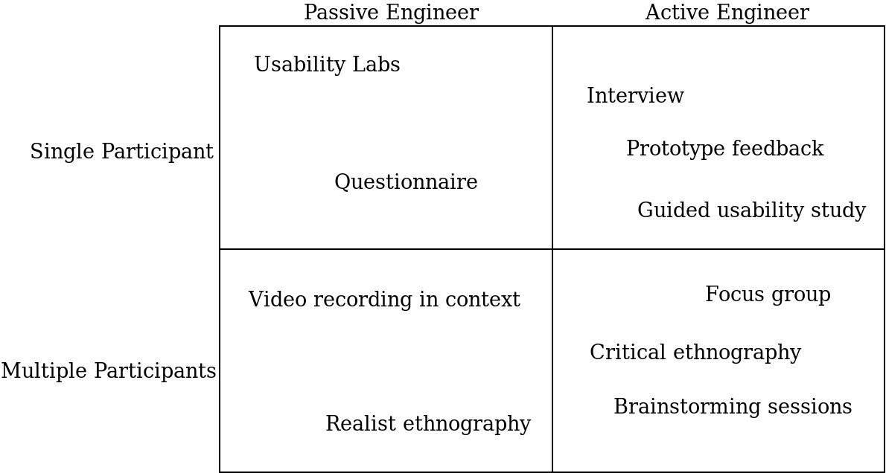
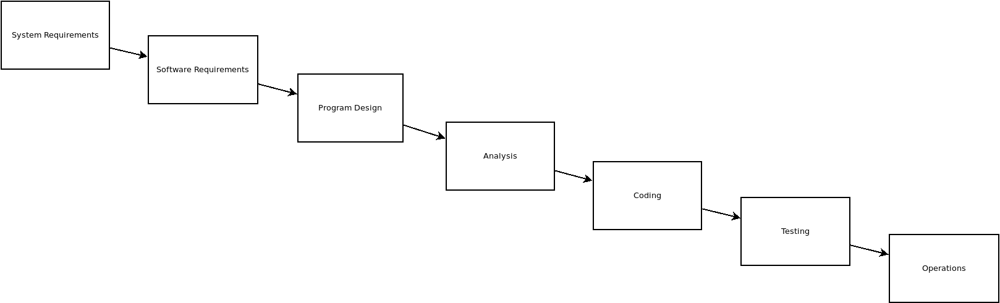

*or somebody else
**or want, or merely think you need
***or to be like.
I can make the system perform this action.
I can read a report with this information.
Usability
Accessibility
Internationalisation
Security
Performance
Portability
…
Beware "as a user"!
Focus on the story aspect

But it's not, in software.
It's a fancy name for a method for turning goals into requirements into working(!) software.

Seemingly proposed as a strawman (W.W. Royce, 1970) but nonetheless became very popular. Defined software engineering up to 2001.
Iterative: breaking a big project into little projects
Incremental: successive additions to an existing artifact
Individuals and interactions over processes and tools
Working software over comprehensive documentation
Customer collaboration over contract negotiation
Responding to change over following a plan
Software Craftsmanship
DevOps
Good fit for limited-budget small teams iterating rapidly on generating results.
From the book of the same name (Eric Ries, 2011)
Data-driven, fast feedback, fast reaction.